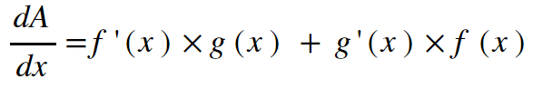

Keaton Hawkins AP Calculus AB Final
As mentioned on the sum rule page, functions that we interact with regularly are rarely as simple as monomials - and they often include operations other than addition and subtraction. Multiplication, for instance. Consider the function f(x) = 5x6•sin(3x). This is the product of two functions. Unlike with addition, if you wanted to find the derivative of f(x), you could not simply "distribute" the derivative operator to each of the product functions. Instead, you must follow the product rule, which tells how to handle differentiating a function that is defined to be the product of two functions:
That formula seems much more complicated than the power and sum rules, but it's really not that bad. As long as you can take the derivatives of each of the two functions that are being multiplied together, all you need to do is plug them into the formula. But just knowing the formula is boring. Understanding it is so much more fun. Let's try to explain the product rule. Using a graphical approach might get sticky, so let's stick to an even more visual method. A geometric one quite similar to the the one shown for the function y = x2 on the power rule page. Consider the function h(x) = f(x)•g(x). Our goal is to find its derivative, h'(x). To do that, let's consider a rectangle whose side lengths are f(x) and g(x) respectively. The area of this rectangle would be f(x)•g(x):
For our derivative, then, let's consider what happens to the area when we increase the input slightly by an infinitesimally small dx. The value of each function will change by some amount. We can represent the change in f(x) as d(f(x)), and we can represent the change in g(x) as d(g(x)). So, the new value of the function can be seen below, represented as the area of our new rectangle:
There's a bit to break down here. First of all, notice the two different notations that I've been using for derivatives. One is dy/dx, and the other is an apostrophe. For instance, the derivative of f would be f' (read "f prime"). These have exactly the same meaning. They are two different ways of writing "the derivative of." For any function, f(x), f'(x) = df/dx. So:
Now we can return to our rectangle. As with the square on the power rule page, we are looking for the rate of change, so all we care about is the change in the value of A. As a result of our slight nudge to the input, dx, the area of our rectange has increased by the areas of the two blue rectangles, plus the area of the small green rectangle in the corner. So, the change in area, dA, is d(f(x)) • g(x) + d(g(x)) • f(x) + d(f(x)) • d(g(x)). We can expand this. Using our logic from above, d(f(x)) = f'(x)dx, and d(g(x)) = g'(x)dx. We can substitute these in and divide everything by dx:
But remember! The last term of our formula goes to zero because dx is a factor, and a property inherent to the definition of dx is that it approaches zero. So, our formula becomes:

And there's our product rule formula! Isn't it wild how something as seemingly complex as a calculus formula can be derived from simple rectangle geometry? And they say math isn't cool...
There's one more thing to note here. When a function is defined as another function multiplied by a constant, you can ignore the product rule. Instead, just take the derivative of the function as if the constant coefficient weren't there, then multiply the derivative by the constant. Why does this work? Let's consider the function f(x) = 6x2. Suppose we said that this was the product of two functions: y = 6, and y = x2. What's the derivative of y = 6? It's zero, of course. Remember, a derivative represents slope, and when you graph a constant, it's just a horizontal line with a slope of zero at every point. So the derivative of any constant is zero. So then, let's use the product rule to find the derivative of f(x): f'(x) = 0 • x2 + 6 • 2x. The term on the left is just zero, because the derivative of the constant was zero. What you're left with is just the constant multiplied by the derivative of the other function.